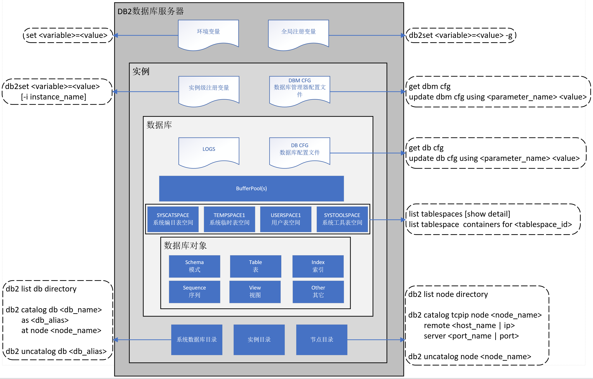

DB2数据库体系结构
DB2体系结构图

DB2服务器环境变量
1. 环境变量1
set <variable>=<value> # 设置服务器变量
2.全局注册变量1
2
3db2set -all # 查看当前注册变量设置 ([g]全局、[i]实例)
db2set -lr # 查询所有注册变量 (全局 + 实例)
db2set <variable>=<value> -g # 设置全局注册变量
实例
创建实例
参考： DB2数据库安装
实例相关命令
1 | db2ilist # 列出实例 |
配置实例
1. 实例级注册变量1
2
3db2set <variable>=<value> [-i instance_name] # 设置实例级注册变量
# eg
db2set DB2COMM=TCPIP
2. 数据库管理配置文1
2
3
4
5db2 get dbm cfg # 获取当前实例数据库管理文件配置
db2 reset dbm cfg # 恢复默认配置
db2 update dbm cfg using <parameter_name> <value> # 配置当前实例数据库管理文件参数
# eg
db2 update dbm cfg using SVCENAME=50000
DB2INSTANCE 变量
该变量主要用于实例间切换，但在Linux/Unix系统下实例名即为实例用户名，因此直接使用不同实例用户登陆进行实例切换1
2
3echo $DB2INSTANCE # 输出变量值
set DB2INSTANCE=<instance_name> # 设置变量值
get instance # 获取当前实例
数据库
创建数据库
创建数据库时默认生成三个表空间 SYSCATSPACE、TEMPSPACE1、USERSPACE11
2
3
4
5
6
7
8
9
10
11CREATE DATABASE <db_name> -- 创建数据库
AUTOMATIC STORAGE <YES | NO> -- 是否自动存储
ON <path | drive> -- 数据库路径
ALIAS <db_alias> -- 别名
USING CODESET <code> TERRITORY <territory> -- 代码页
COLLATE USING <SYSTEM | IDENTITY | ...> -- 整理次序
CATALOG TABLESPACE <tablespace_option> -- 系统编目表空间
USER TABLESPACE <tablespace_option> -- 用户表空间
TEMPORARY TABLESPACE <tablespace_option> -- 临时表空间
-- 大写为关键字
示例：1
2
3
4
5
6
7create database test
automatic storage yes on /data/db2/data -- 使用自动存储管理
dbpath on /data/db2/log -- 指定数据库的事物日志存储路径
using codeset utf-8 -- 指定字符集
territory CN -- 决定数据库的时间和日期格式为中文
pagesize 16 k -- 数据库默认页大小
alias test; -- 别名
数据库相关操作
1 | db2 list database directory # 列出当前实例下所有数据库 |
配置数据库
1 | db2 get db cfg # 获取当前据库配置文件参数设置 |
缓冲池
- 每个表空间都会与特定的缓冲池相关；
- 想要表空间与缓冲池相关，该缓冲池与表空间必须具有相同的页大小；
- 表空间与缓冲池关联是在使用 CREATE TABLESPACE 语句创建表空间时定义的，但是可以使用 ALTER TABLESPACE 语句更改关联。
创建缓冲池
1 | CREATE BUFFERPOOL <bufferpool_name> -- 缓冲池名称 |
示例：1
CREATE BUFFERPOLL MYBUFFER16K SIZE AUTOMATIC PAGESIZE 16K;
缓冲池相关操作
1. 修改缓冲池1
ALTER BUFFERPOOL <name> SIZE <tgt_size>
2. 查看缓冲池1
2
3
4
5SELECT T2.TBSPACE
,T1.*
FROM SYSCAT.BUFFERPOOLS T1
INNER JOIN SYSCAT.TABLESPACES T2
ON T1.BUFFERPOOLID = T2.BUFFERPOOLID
表空间
创建表空间
1. 创建用户表空间1
2
3
4
5
6
7
8
9-- SMS
CREATE TABLESPACE <name> MANAGED BY SYSTEM USING ('<path>');
-- DMS
CREATE TABLESPACE <name> MANAGED BY DATABASE USING (DEVICE | FILE '<path>');
- DMS自动存储
CREATE TABLESPACE <name>;
CREATE TABLESPACE < name > MANAGED BY AUTOMATIC STORAGE;
2. 创建系统临时表空间1
CREATE SYSTEM TEMPORARY TABLESPACE tmp_tbsp MANAGED BY SYSTEM USING ('/data/tmp_tbsp');
3. 创建用户临时表空间1
CREATE USER TEMPORARY TABLESPACE usr_tbsp MANAGED BY DATABASE USING (FILE '/data/usr_tbsp' 5000);
示例:1
2
3
4
5
6
7
8CREATE TEMPORARY TABLESPACE tbs_temp
PAGESIZE 16K
MANAGED BY DATABASE USING（FILE '/data/' 1000）
EXTENTSIZE 32
OVERHEAD 10.67
PREFECHSIZE 32
TRANSFERRATE 0.04
BUFFERPOOL MYBUFFER16K；
表空间相关操作
1. 查看表空间1
2db2 list tablespaces [show detail] # 查看表空间
db2 list tablespace containers for <tablespace_id> # 查看表空间及容器属性
2. 修改表空间1
2
3
4
5
6
7
8
9
10# 2.1. SMS表空间只能增加容器；
ALTER TABLESPACE <name> ADD(DEVICE '<path>' <size>, FILE '<filename>' <size>);
# 2.2. DMS表空间可以调整容器；
ALTER TABLESPACE <name> REDUCE (FILE '<filename>' <size>); # 缩小
ALTER TABLESPACE <name> EXTEND (FILE '<filename>' <size>); # 增大
ALTER TABLESPACE <name> RESIZE (FILE '<filename>' <size>); # 调增 （可调小或调大）
ALTER TABLESPACE <name> DROP (FILE 'filename', DEVICE 'path'); # 删除DMS容器
# 2.3. 自动存储表空间不能手动调整大小；
3. 重命名表空间1
RENAME TABLESPACE <srcName> TO <tgtName>;
4. 将表空间从托机状态切换至联机状态1
ALTER TABLESPACE <name> SWITCH ONLINE;
5. 删除表空间1
DROP TABLESPACE <name>;
参考
循序渐进DB2 （第2章~第3章）